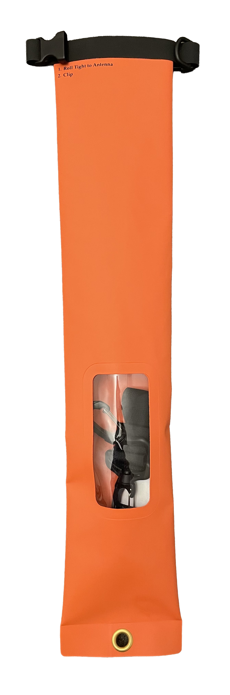

Roll-top seal · orange & black
Durable, waterproof material designed for long-term use in the marine environment. Clear front window for visibility. Additional attachment points may be available to accommodate different mounting and strap configurations.
Bag dimensions may be customizable depending on the radio being used. Contact info@coast-rescue.com with questions.